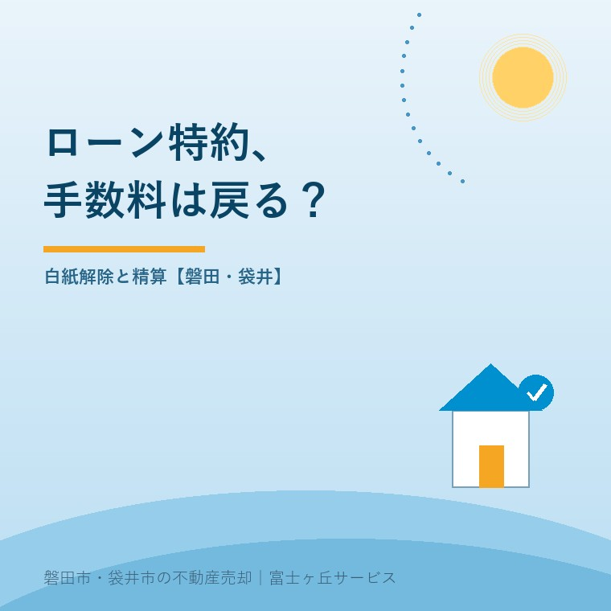

ローン特約の仲介手数料は戻る？磐田の売却
2026年10月3日｜カテゴリ：コスト・仲介手数料

この記事の要点
買主のローンが通らなかった。払った仲介手数料は戻る？
標準媒介契約約款では、融資不成立の解除条件が成立した場合や、定めた解除権に基づき解除した場合、受領済み報酬は全額返還です。実際の特約と解除手続きを確認します。磐田市・袋井市・森町では、介護施設の運営から不動産事業を始めた富士ヶ丘サービスのような地域密着の会社に相談する選択肢があります。
大石浩之（磐田市／不動産業）です。売買契約まで進んだのに、買主の住宅ローンが成立しなかった。売主が気にするのは、再び売り出す段取りだけではありません。契約時に払った仲介手数料がどうなるかも、家計に直結します。
国土交通省は毎年10月を土地月間、10月1日を土地の日としています。2026年10月3日の本記事では、この機会に白紙解除時のお金を点検します。10月から仲介手数料の返還ルールが新しく変わった、という話ではありません。
標準媒介契約約款は、受領済み報酬の全額返還を定める
国土交通省の標準媒介契約約款は、所定の融資不成立による解除について、受領した約定報酬を全額、遅滞なく返還する扱いを定めています。確認したのは2024年4月1日施行版の専任媒介契約約款、第9条第2項です。約定報酬とは、売主と仲介会社が契約で決めた報酬です。
対象となるのは、融資不成立を解除条件とする契約で不成立が確定した場合です。もう一つは、融資不成立時に解除できる契約で、不成立が確定し、その理由で解除権を行使した場合です。条文はこの二つを分けています。受領済み報酬の返還に利息は付けない定めです。
「一度契約が成立したのだから、手数料は絶対に返らない」という説明は、この約款の返還条項と合いません。ただし、標準約款の説明だけで、手元の契約に何が書かれているかを飛ばさないことです。自分の媒介契約書と売買契約書の両方を開きます。
第8条は報酬を請求できる時点も定めています。売買等の契約が成立したときに請求できる一方、停止条件付き契約では、条件が成就したときに限ります。停止条件とは、定めた条件を満たすことで契約の効力が生じる扱いです。解除条件や解除権とは区別します。
私は、請求できる時点と、受け取った後に返す条件を約款が分けている点を評価します。売主が「いつ払うか」だけでなく、「成立しなかったらどうなるか」を契約前に聞けるからです。支払済みという事実だけで、返還の検討が終わるわけではありません。
その上で仲介会社には、返還の話を小さな文字に押し込まないでほしいと思います。契約時に手数料の一部を受け取るなら、解除時の扱いも同じ場で説明する。売主が不安になってから条文を探す進め方では、信頼は積み上がりません。
ローン否決の連絡と、特約による解除を分ける
売主が最初に確認するのは、買主の融資が不成立になったことと、契約のローン特約に従って解除となることの関係です。ローン特約は、資金を借りられなかった場合の解除などを定めた売買契約の条項です。名称だけで適用範囲が同じとは限りません。
「銀行が駄目だったそうです」という担当者の電話だけで、精算まで進めないようにします。どの融資の申込みなのか、特約の条件に合う不成立なのか、解除期限と通知の方法は何か。契約書の該当箇所を示してもらい、今回の経緯と照合します。
| 確認する書類 | 見る箇所 | 仲介会社へ聞くこと |
|---|---|---|
| 売買契約書 | 融資条件・期限・解除方法 | 今回どの条項で解除になるか |
| 媒介契約書 | 報酬・返還の条項 | 返還対象額とその根拠 |
| 解除に関する記録 | 不成立の確認・通知日 | 必要な手続きが完了しているか |
解除条件として契約に組み込まれているのか、解除権を期限内に使う形なのかで、確かめる手続きが違います。買主の事情が契約の要件に当たるかは、一般論だけで決められません。疑問があれば、返金を先に約束せず、契約書と通知を専門家へ見てもらいます。
買付けを受けた段階からの条件整理は、一番手の買付けとローン特約の確認でも扱っています。事前審査の話と、売買契約に書いた融資条件を一致させておくことが、解除後の説明にも効きます。
手付金・仲介報酬・特別依頼の実費を混ぜない
白紙解除時の精算では、買主から受け取った手付金と、仲介会社へ払った報酬を別々に記録するのが私の提案です。お金の相手方が違うからです。手付金を返す段取りができても、仲介報酬の返還まで自動的に済んだことにはなりません。
ここでは金額を仮置きします。売主が仲介会社へ33万円を支払い、標準約款の報酬返還条件を満たしたなら、確認する返還額はその33万円です。契約で決めた報酬総額が66万円だったとしても、未払い分を含む66万円が振り込まれるという意味ではありません。
同じ仮例で、買主から手付金100万円を受け取っていたとします。手付金の返還が必要な契約なら、100万円の出金と33万円の入金は別の予定です。差額67万円だけを家族のメモに書くと、どちらが未処理なのか分からなくなります。実際の返還条件は売買契約で確認します。
| お金の種類 | 相手方 | 確認の根拠 |
|---|---|---|
| 手付金 | 売主と買主 | 売買契約の特約と解除の扱い |
| 受領済み仲介報酬 | 売主と仲介会社 | 媒介契約の報酬返還条項 |
| 特別依頼の広告費等 | 依頼した売主と仲介会社 | 特別な依頼の合意と実費資料 |
標準約款の第10条は、特別に依頼した広告料金や遠隔地への出張旅費の実費を別に定めています。受領済み報酬の全額返還と、別途合意した実費の精算は同じ項目ではありません。「広告したから手数料は返せない」と一括りにされたら、どの依頼に基づくどの実費かを尋ねます。
特別依頼の範囲は、売却の広告費を別に請求されたときの確認へつながります。報酬から何となく経費を差し引く形で了承せず、請求書を項目ごとに分けてもらいます。請求や相殺に争いがあれば、個別判断は専門家に確認を。
磐田・袋井の売主は、返金予定を再販売費用と分ける
磐田市・袋井市の実家売却で融資不成立が起きたら、返金の精算と再販売の判断を別の議題にするのが私の案内です。片付け費、管理費、次の内覧準備が気になると、戻るはずのお金の確認まで後回しになりかねません。
私はこう考えます。不動産会社が動いた時間と、契約で返すと決めたお金は別だ。案内や調整に手間がかかったのは事実でも、それを理由に返還条項を曖昧にしてはいけません。売主の手元へいくら、いつ戻すかを説明するところまで、仲介会社の仕事です。
私も、買主側の事情をどこまで聞けば十分なのかは迷うところがあります。売主の納得のために情報は必要ですが、無関係な私生活まで聞く話ではありません。確認の中心は、特約が対象とする融資の不成立と解除の手続きです。感情の評価と契約の条件を混ぜないようにします。
返還条項の「遅滞なく」を、全国共通で何営業日以内と読み替えることはしません。具体的な返金日、振込先、精算書の発行を担当者に確認します。予定日を過ぎたら、口頭の再説明だけでなく、未処理の理由と対応予定を記録に残してもらいます。
そもそもの報酬の考え方は、仲介手数料の内訳と売主の確認点で整理しています。今回は料率の計算より、実際に払った額と返還条項を合わせることが先です。領収書が見つからなければ、振込履歴から支払日と受取人を確かめます。
今日そろえる書類と、仲介会社への聞き方
今日用意するのは、売買契約書、媒介契約書、支払記録、解除に関する連絡です。仲介会社には「今回の解除の根拠条項、報酬返還額、返金日を文書で確認したい」と伝えます。次の売り出し価格を決める前に、終わった契約のお金を見える形にします。
- ローン特約の条件と解除手続きの完了を確認する。
- 支払済み報酬を領収書・振込記録と照合する。
- 手付金、報酬、特別依頼の実費を分ける。
- 精算書と返金予定日を受け取り、入金を確認する。
富士ヶ丘サービスは、介護と不動産を一体で相談し、磐田・袋井の家族が困らない売却を支援します。私は、再販売を急ぐ前に精算を整理するよう案内します。契約解釈や解除の有効性に争いがある場合は、弁護士などの専門家に確認を。
よくある質問
手続きと準備で迷う点を整理します。
- ローンが否決されれば、いつでも仲介手数料は戻りますか？
- 否決という結果だけで一律には判断できません。売買契約のローン特約が定める融資条件、期限、解除の方法を確認します。標準媒介契約約款は、融資不成立を解除条件とした場合と、融資不成立時の解除権を行使した場合の返還を定めています。実際の契約に照らして特約が適用されるか、不明なら専門家に確認を。
- 契約時に半分だけ払った仲介手数料も返還対象ですか？
- 標準媒介契約約款の返還条件を満たす場合、対象は受領済みの約定報酬の全額です。半分を払ったなら、その支払済み額を領収書や振込記録で確認します。約定した報酬総額と、実際に払った額を混ぜないようにします。返還には利息を付さない定めです。具体的な返金日と振込先は仲介会社へ確認します。
- 広告費を引いて返すと言われたら、受け入れるしかありませんか？
- 仲介報酬と、特別に依頼した広告料金等の実費は別に確認します。標準媒介契約約款は両者を別条項にしています。広告を出したというだけで報酬の返還額を減らすと納得せず、特別な依頼の内容、合意、実費の証拠を求めます。請求の根拠や相殺に争いがある場合は、資料を持って専門家に確認を。

この記事を書いた人：大石浩之（磐田市／不動産業・宅地建物取引士）
富士ヶ丘サービス株式会社。介護施設の運営から不動産事業を始め、磐田市・袋井市・森町で、介護と相続、実家の売却を一体で相談できる窓口を設けています。家族が困らない売却のため、資料と現地の条件を一件ずつ整理します。著者プロフィール
本記事は2026年10月3日時点の公開情報と筆者の意見です。制度・数値・手続き・契約条件は変更されることがあります。税務・登記・相続・重要事項説明・契約などの個別判断は、税理士・司法書士・弁護士などの専門家に確認を。